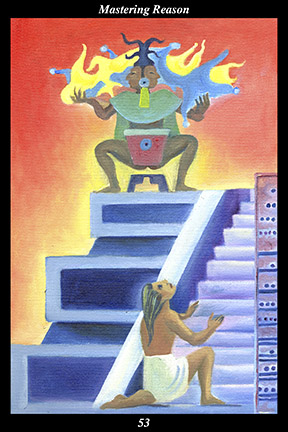

 | IMAGE A male warrior kneels beside a stone marker counting off the thirteen steps leading to the top of a pyramid. Atop the pyramid, an ancient spirit, part female and part male, squats before the ceremonial drum and balances the forces of water and fire. The warrior’s face is raised to gaze with wonder and reverence upon the spirit of duality above. |
INTERPRETATION: This hexagram depicts reason humbling itself before the transcendental. The male warrior symbolizes the masculine creative force, who tests and trains human nature in order to increase its versatility and fortitude. The pyramid symbolizes human works that mirror the sacred mountain standing forever at the center of the world. The thirteen steps of the pyramid symbolize the single set of laws that govern both the realm of matter and the realm of spirit. The ancient spirit that is part male and part female symbolizes the absolute unity of the duality of creation. The forces of fire and water that the ancient spirit balances symbolize the act of creation whereby everything is formed of two complementary halves. The ceremonial drum symbolizes human action following the eternal rhythm of the heartbeat of all creation. That the warrior’s face is upraised in wonder and reverence means that reason is not an end in itself but, rather, must serve something higher than itself. Taken together, these symbols mean that you complement the logic of reason with the love of creation.
ACTION
The masculine half of the spirit warrior advances toward the spiritual logic of the first ancestor. This a time for reining in the authority of the intellect in order to achieve greater balance and harmony in your life. Not until we accept that many of our beliefs are either opinions we have received from others or conclusions we have leapt to based on insufficient experience do we allow our thoughts to follow their natural line of reasoning. Once we accept that matter is spirit and that nature is the sacred, then we no longer allow our intellect to pursue avenues that deaden the human spirit, dehumanize society, and desecrate nature. We cultivate instead a higher form of reason that is tempered by its other half: opening our heart to the sacredness of everything in creation, true reason becomes a path by which we approach ever closer our destination in the divine intelligence of the creative forces. Because you hold everything in the visible world sacred, you are blessed by the unseen forces. Because you train your mind to follow the path of spiritual cause and effect, you are blessed in the visible world.
INTENT
When the heart understands, the mind feels. Only when our heart perceives the world as it truly is does our mind have a foundation upon which to build. Without an abiding love for all creation, our mind is set adrift on the sea of fear, doubt, and endless speculation. Without a heartfelt understanding of human nature, our thinking is cold, calculating, and devoid of conscience. By observing the laws governing the way things interact and develop in the realm of nature, we grasp the laws governing the way things interact and develop in the realm of spirit. By rigorously training our mind to see in the visible a clear vision of the invisible, our mind becomes a mirror of the laws governing nature and spirit.
SUMMARY
You cannot solve your problems by reason alone, since it is reason that tells you why things cannot be solved. You must really place yourself in the hands of spirit now and trust in the power and love of something greater than yourself. Visualize yourself happy and well and speak to spirit in those images and pictures. Stop the rationalizing mind. See everything as sacred, including yourself.
THE LINE CHANGES
1° Be concerned with the physical and emotional stress that has been endured for a while. It is a time to slow your pace and not place undue demands on others or yourself. Listen to your body and heart—rest and relax and catch your breath before going on.
2° People find themselves estranged, having concentrated so forcefully on their goal that the partnership has been taken for granted. It is a time to break through all the little barriers between you. Be light-hearted and all your closeness and intimacy will return.
3° Be concerned with old disagreements that threaten to erupt anew and disrupt the existing equilibrium. It is not that you are not strong enough to win—it is the harm that conflict would inflict on the new venture. Be strong enough to win by maintaining peace.
4° People find themselves uneasy, unsure of what misfortune might strike out of nowhere. While it is wise to be wary, it is foolish to be timid—you have the resources to stave off any counterattacks. Practice the art of renewal, don’t become part of the old.
5° Be concerned with the manner in which you conduct yourself and the message it conveys. Successful leadership is neither arrogant nor indecisive—it is confidently responsive to circumstances. Exude sincere goodwill and you will gain the trust of all.
6° People find themselves alone and alienated, surprised they have driven off the very allies they sought to defend. Sense this now, before it is too late—you depend on others more than you realize. Dispense loving-kindness instead of ideas and all ends well.